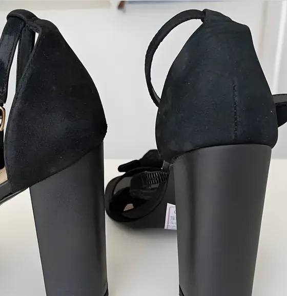
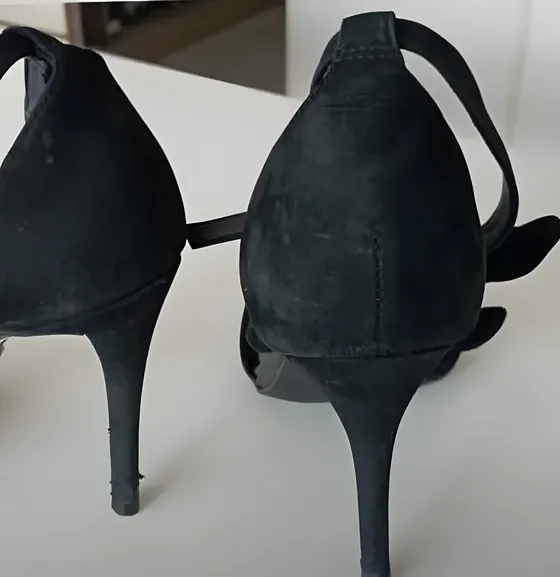
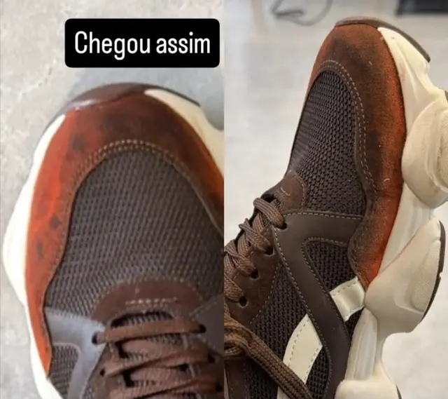
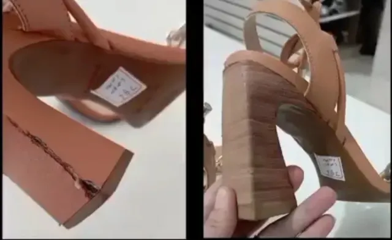
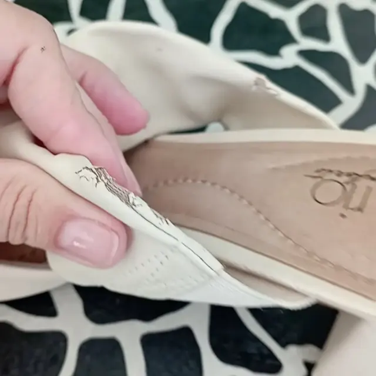
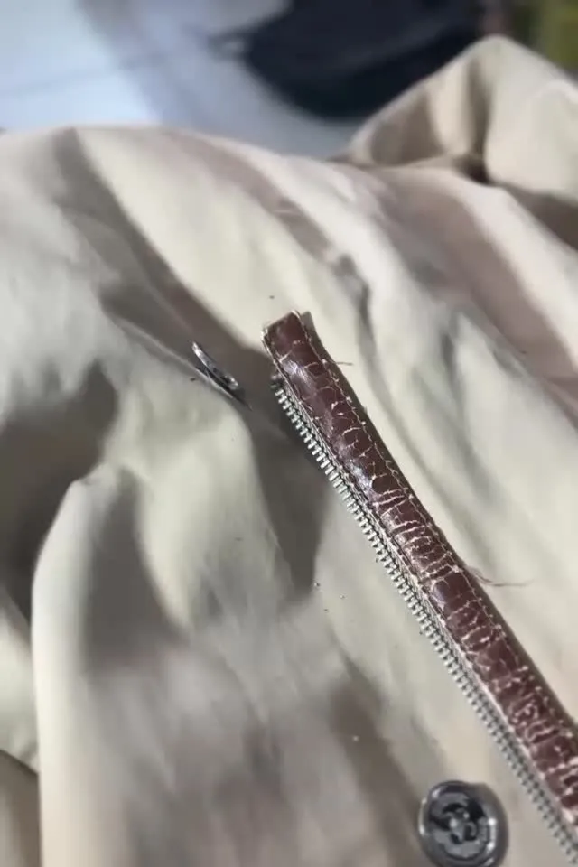

Antes e depois
Calçado que chega gasto e sai pronto para mais uso.


Do salto fino ao salto bloco
A sandália chegou com o salto fino gasto. Saiu com salto novo, mais largo e firme, no mesmo preto.
Troca de salto é um dos serviços de sapato e sandália da Pimentel.
Na bancada
Calçados como chegaram e consertos em andamento.




Tem um calçado parado no armário? Mande a foto e peça o orçamento.